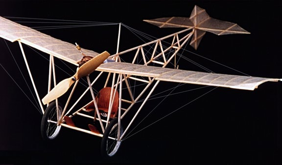
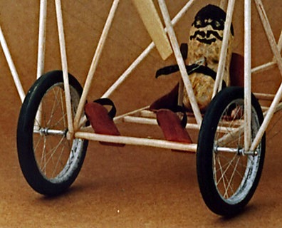

Santos Dumont's Demoiselle, 1908
|
|---|
| This model is a replica of Santos Dumont's Demoiselle, based on the Walt Mooney plans. Flying weight is 7.8 grams with Japanese tissue and the long-discontinued Brown GB-12 CO2 motor for power. The rigging is all functional and adjustable, allowing me to set the tail surfaces for pitch and yaw, as well as wing warping for roll. |
|  |
| This was my first CO2 powered model and has been an absolute delight. There will definitely be more. With a reasonable charge, this beauty will rise off the ground and putter about for just over a minute under the 26 foot rafters at the local school gym. In flight, it sports a pilot made from an emptied peanut shell. |
|  |
|
Copyright 1997-2015, Thayer Syme. All rights reserved |